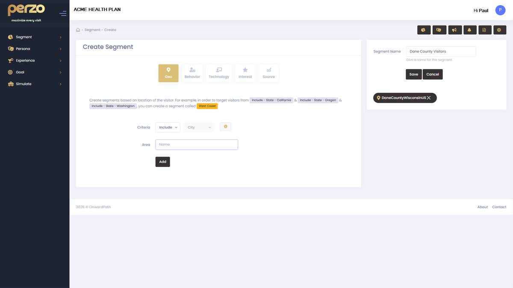
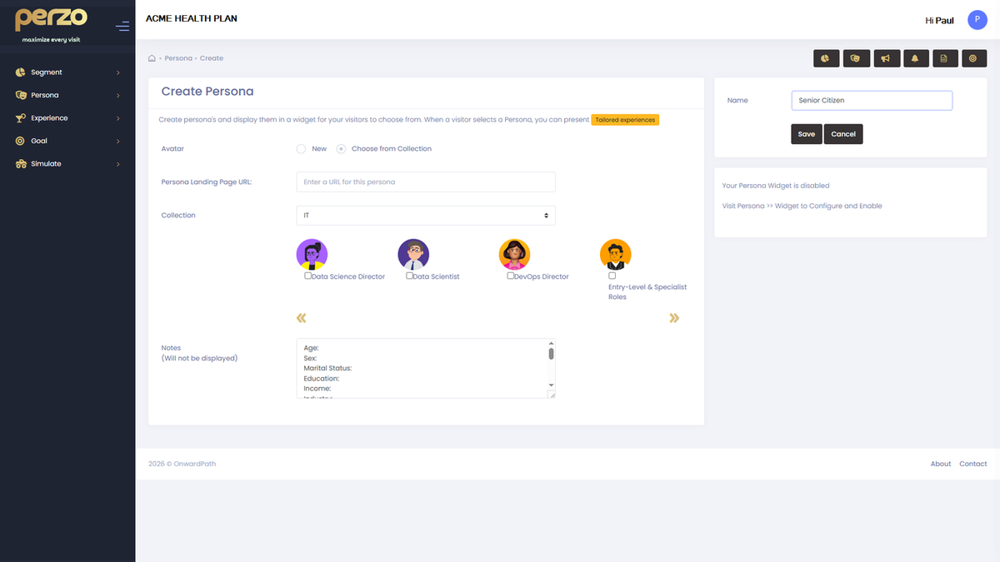

Your members shouldn't have to explain themselves twice.
Perzo identifies the intent of anonymous members the moment they arrive and delivers a personalized experience that resolves their need before they reach a live agent.
The anonymous member gap is a deflection problem
When a member arrives at your portal without logging in, your platform has no context - no role, no intent, no history. Every visitor gets the same generic page. The ones who can't find what they need in seconds don't dig deeper. They call.
- Generic landing pages fail to anticipate why a member arrived, even when clear signals exist
- Members who escalate repeat their context to a live agent compounding cost and friction
- No PII or authentication is needed, sufficient context exists in the anonymous session to act
Two modes. One precise result.
Perzo delivers personalization through two complementary audience models. System-applied Segments that detect intent automatically, and member-declared Personas that capture intent directly. Both activate before login. Neither requires PII.
Perzo evaluates anonymous contextual signals on every page load. Referral source, URL path, device type, geographic region, time of visit and automatically matches the visitor to a pre-configured Segment.
- Visitor from PA status page → Prior Auth Inquirer Segment
- Formulary search referral → Drug Coverage Segment
- First-session + enrollment referral → New Member Segment
- Mobile + urgent-term URL → High-Urgency Segment

Where signal confidence is lower, Perzo presents a lightweight role-selection prompt. The member identifies their need in a single tap. Declared intent always supersedes inferred signals.
- "I need prior auth help" → PA Member Persona
- "Check my drug coverage" → Coverage Member Persona
- "I'm a new member" → Onboarding Persona
- Persona selection persists across sessions — configurable

Even modest deflection rates produce material savings
Every anonymous session that resolves via self-service instead of escalating to a live agent eliminates $5–$12 in contact cost. At the scale of a regional or national PBM, even a 10% deflection rate generates millions annually.
| Scenario | Monthly Sessions | Deflection | Est. Annual Savings |
|---|---|---|---|
| No personalization | Any | 0% | $0 |
| Conservative | 100,000 | 10% | $900K – $1.4M |
| Midpoint | 250,000 | 15% | $3.4M – $5.4M |
| Optimistic | 500,000 | 20% | $9M – $14.4M |
Every Segment and Persona delivers a purpose-built experience
Content editors configure personalized experiences through the Perzo visual editor field-by-field overrides for headlines, CTAs, body copy, and media without developer involvement.
Replace the default headline and CTA with context-relevant copy for each Segment.
Surface the most relevant tool above the fold. Drug lookup, PA status, EOB retrieval.
New member visitors get a structured experience. Benefits overview, account setup, ID card retrieval.
Deliver segment-specific alerts and guidance that match the member's likely question.
When a member does escalate, Perzo passes captured context to the handoff so the agent starts with full intent.
Every zone on the page can carry a Segment or Persona-specific variant, independently configured.
Context-relevant copy, generated at the point of need
- 1Segment & Persona Context Awareness
The AI Assist engine receives full audience context. Segment type, Persona, page zone, and tone guidelines before generating a suggestion. Every output is grounded in who the member is.
- 2Field-Level Generation
Generate a headline. Generate a CTA label. Generate body copy. AI Assist works field-by-field. Editors review and approve each element independently.
- 3Healthcare Tone Compliance
The generation prompt enforces your organization's tone guidelines. Clinical accuracy, plain language standards, and regulatory caution for healthcare communications.
- 4Speed to Configuration
What previously took a day to produce - variant copy for three segments across six zones is drafted in minutes. Editors focus on judgment, not blank-page creation.
Be first. Pay less. Prove it fast.
Early access organizations receive preferred pricing locked for the life of their contract plus a dedicated onboarding track designed to reach pilot go-live in 30 days.
Request Early AccessNo commitment required. We'll come prepared.